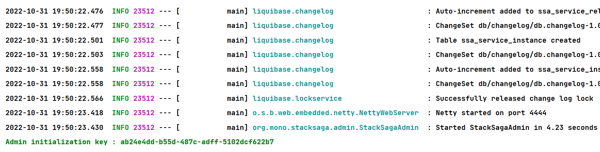
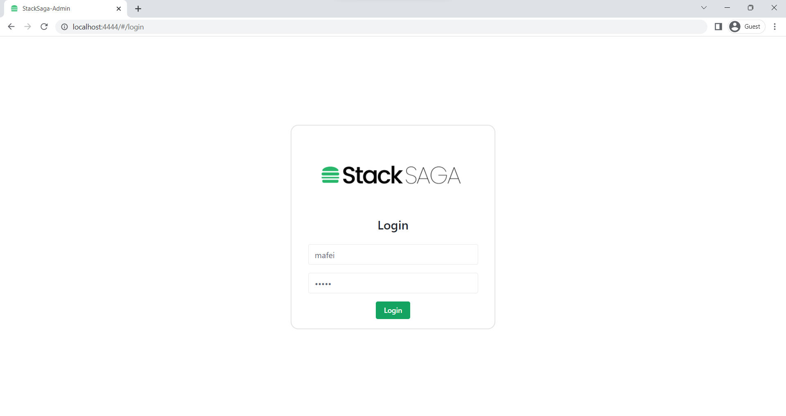
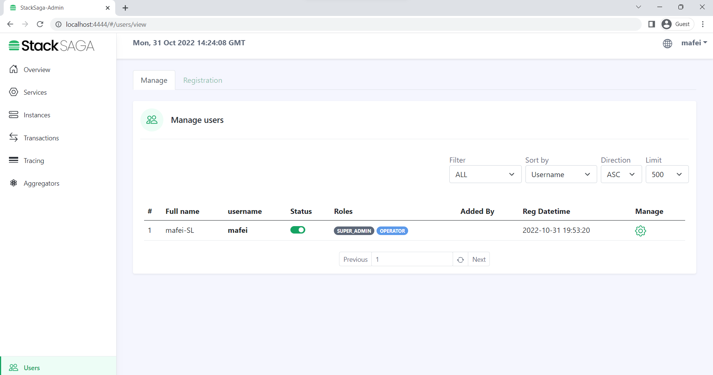

StackSaga Server (Admin)
Docker Image
you can choose the StackSaga server wit specific database that you want. See all images on docker hub.
For instance, if you prefer to use mysql StackSaga server, you can run the code to pull the image.
docker pull stacksaga/stacksaga_admin_mysql
after pulling the image you can create an image and, then you have to provide some Environment variables.
OR, if you prefer doing the deal with docker compose, here is the basic code snippet that you want tin run your own container.
to run the docker-compose file, go the file directory and run this code.
docker compose up
Download Jar
stack-saga-admin-server.zip
Downloads
Minimum Requirements
- Java java 8 or upper
- Selected Database
START.sh file or following code below. before run the jar,
make sure to config your custom
configuration in the application.properties file.
> Run on the console
java -jar stack-saga-admin-1.0-SNAPSHOT.jar --spring.config.location=file:application.properties
Using the source code
Initialize The StackSaga Admin server.
> after successfully running the jar file, you can see Admin initialization key in the console like below.

> copy the key and go to the admin dashboard http://localhost:4444 and enter
the code click the button Initialize the server
> enter the super admin details.

> Login with the credentials that provided.
> Congratulations! now you have successfully finished the initialization process.
now you can experience StackSaga features and connect all the microservices with the StackSaga Admin Server. the next steps are in the developer guide section.